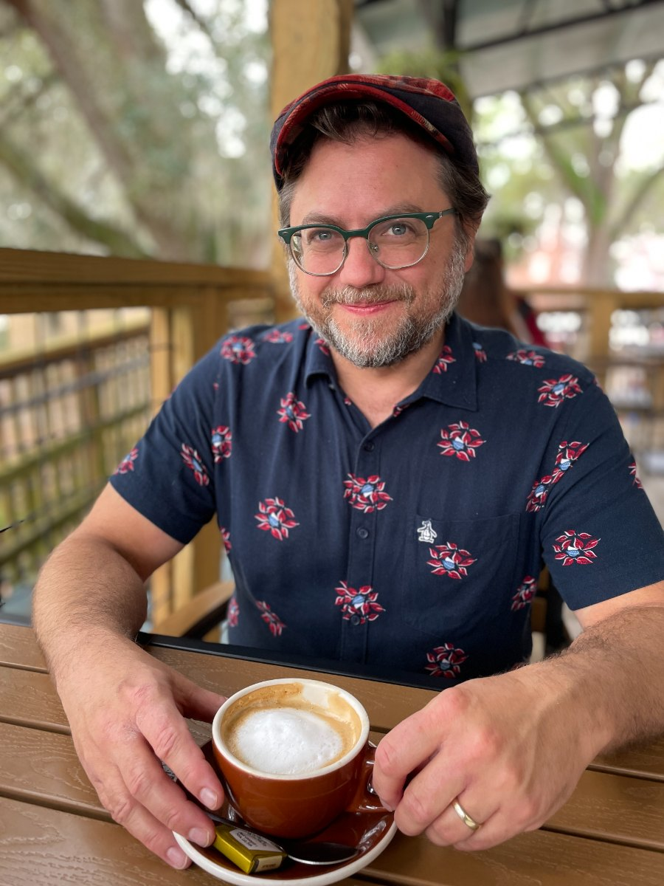

About
Twenty years designing instruction. Now I want it to move faster.
Twenty years of music theory: four of them as full-time faculty at Georgia State University. Before that, a PhD in composition at the University of Pennsylvania, a Master’s at Michigan, and courses taught at Rowan, Penn, Michigan, and UAB.
Most of that work was translation. Music theory arrives as dense scholarship written by theorists for theorists, and my students were performers and composers who needed to use it. So a lecture became a sequence: open with a passage the usual tools can’t explain, hold the resolution back until someone wants it, then teach the tool and its limits together so students leave with judgment instead of a procedure. A SME handing over a hundred pages and a deadline is the same problem.
I resigned the GSU position to support my wife’s academic career and to be the primary caretaker at home. I’d make the same choice again. But it did mean my own career came down to whatever a second academic could find in one city, which in Tallahassee meant part-time work at Florida State — contract by contract, with no path forward.
I spent these years trying to invigorate music theory curricula that have barely changed in over a century — the same exercises, the same lack of historical and cultural contextualization, for students who go into the classes reluctantly. Some of that work stuck. Most of it met resistance from an entrenched system. So I want to move faster: a position where a design that isn’t landing gets fixed in weeks, and where saying it isn’t landing is part of the job.
I’m based in Tallahassee, spend a portion of each year in London, and work remotely from both.

Black Dog Café, Tallahassee, the usual spot.
Design
- Curriculum and module design
- Assessment and rubric design
- Instructional writing
Build
- Prototyping in HTML
- AI-scored free-text assessment
- Rise 360 and Storyline
With people
- Project management to a brief
- SME collaboration
- Teaching and facilitation
I compose and arrange music on commission, and that work is my second design practice. A commission is a project run end to end: a brief, an ensemble with particular musical strengths and branding, a premiere date that will not move, and a deliverable score in which every detail has to be settled before anyone plays a note. None of the constraints are mine. It gets one chance to work in the room.
Recent commissions include those from the American Patriots Project, the BrassTaps Duo, and the Chicago-based CHAI Collaborative Ensemble. Earlier work includes a dance drama for six musicians and ten dancers, an iPhone soundwalk through Center City Philadelphia, and a multimedia collaboration shown in Philadelphia and Brussels.